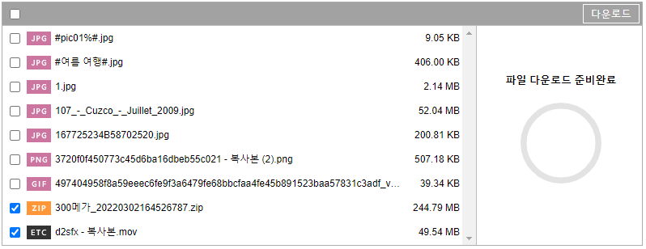
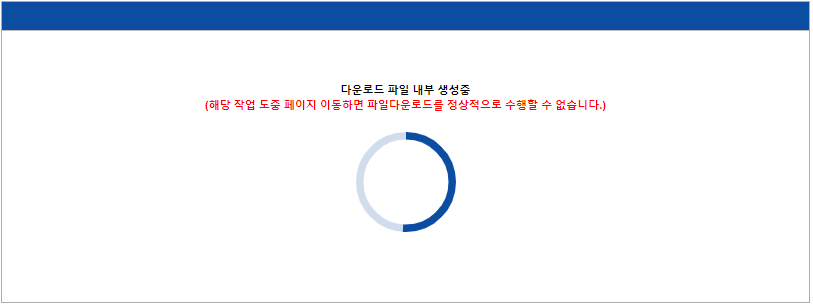

파일 이어서 받기
설명 및 해당 조건
X-Free Uploader는 파일다운로드 도중에 중지되었던 파일을 이어서 받기가 가능합니다.
파일 다운로드의 경우에는 2건 이상의 체크선택된 파일의 누적 사이즈가 큰 경우 압축파일을 생성하는 시간이 소요되는데 시간이 소요되는 동안 진행상태를 움직이는 원형 프로그래스바 형태로 보여줍니다.
압축파일 생성이 모두 완료되면 브라우저에서 파일 다운로드가 진행됩니다.
그러나 위의 진행상태 도중에
사용자가 새로고침
을 하거나
브라우저가 종료
되면 페이지는 초기화되지만
진행중인 압축파일 생성은 계속 진행되어 해당 서버상에는 압축파일이 그대로 존재
하게 됩니다.
위의 경우에 의해
서버상에 생성되어 남아있는 압축파일
을 다시 다운로드 받기 위해서는
XFDocID(File Key)
정보가 필요합니다.
다시 말해 이어서 받기 기능을 시도할 때 중단을 했었던 시점의
XFDocID(File Key)
정보가 일치하다는 전제 하에 중단되었던 파일의 이어서 받기가 가능합니다.
테스트 절차
▼
1) 다운로드 받기 전에 샘플화면 상에 보이는 파일키 (XFDocID) 값을 복사합니다.
2) 사이즈가 큰 파일 2건 이상을 체크선택한 후 [다운로드]를 누릅니다.

3) 파일 다운로드의 경우에는 2건 이상의 체크선택된 파일의 누적 사이즈가 큰 경우 압축파일을 생성하는 시간이 소요되는데 시간이 소요되는 동안 진행상태를 움직이는 원형 프로그래스바 형태로 보여줍니다.

4) 위의 진행상태 도중에 브라우저를 새로고침합니다.
5) 이전에 복사했었던 파일키 (XFDocID) 값을 아래 파일키 (XFDocID) 값 정보에 붙여넣기합니다.
6) 파일 다운로드를 다시 시도합니다. 파일키 (XFDocID) 값 정보 기준으로 새로고침하기 전에 다운로드 수행하지 못했던 파일이 존재하는지 체크되어 안내 메시지를 보여주고 [확인]버튼 누르면 다운로드가 진행됩니다.
7) 파일키 (XFDocID)
해당 샘플화면에서 보여지는 파일키 (XFDocID) 정보는
화면이 새로고침될때마다 정보가 Random으로 변경되어 자동으로 세팅
됩니다.
(X-Free Uploader가 제공하는 onLoad 시점에서 getRandomFileKey함수 사용)
해당 파일키가 지정되지 않으면 기본적으로 파일키 정보는 "xfdocid_0000000000"로 세팅되어 /xfdocid_0000000000 폴더를 바라보게 됩니다.
※ "/xfdocid_0000000000" 폴더 위치가 기준이 되어 파일다운로드가 실행되더라도 이어서 받기 기능은 가능하나 해당위치가 유니크하지 않기에 불특정다수의 압축파일 생성이 진행되어 원하지 않는 동작이 발생될 수 있습니다.
▷ XFDocID (File Key)
XFU v2에서 새로 추가된 XFDocID (게시물에 매핑될 유니크한 File Key) :
서버파일조회
파일 이어서 전송(example_10.html) 페이지로부터 전달받은 XFDocID File Key 입니다.
▶ 파일 다운로드
▷ 관련 컨트롤
선택다운로드
전체다운로드
파일 이어서 전송 페이지 이동